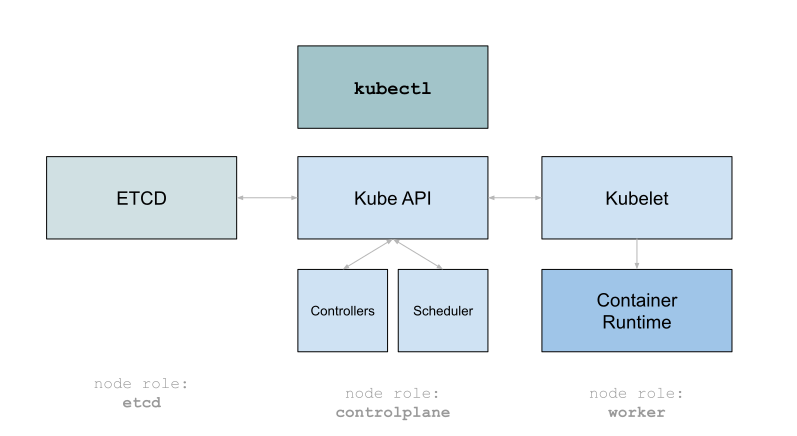
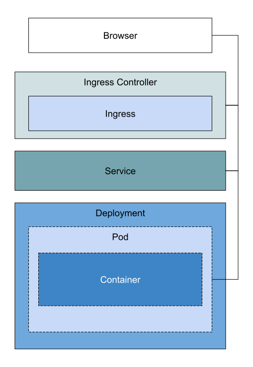

# Ansible for Kubernetes ### Jeffrey den Drijver ##### Consultant Open Source @ Anylinq ##### Devops Engineer @ Logius # What is Kubernetes? --- Orchestration Layer for Containers and related services - CMDB with API - Control layer - Supporting components --- ### Kubernetes Platform Components  --- ### Kubernetes Platform Components - Kubernetes Control Plane - Container Runtime - Docker - ContainerD - Cri-O - Host OS - Fedora CoreOS - Flatcar Linux - RHEL, Ubuntu, Suse - Rancher OS, etc --- ### Kubernetes "Flavours" - Engine - GCP, EKS - OKD, Kubespray, Kubeadm - RKE - Component Implementations - Plain Kubernetes - K3s - Development Environments - Minikube - Kind - Docker desktop integration # Kubernetes Resources --- - Stored in ETCD - Represented through Yaml files ``` kind: Deployment metadata: name: wordpress spec: containers: - name: wordpress image: wordpress:latest ``` - Applied using kubectl ``` kubectl apply -n some-namespace -f deployment.yaml ``` --- ### Types of Resource Types - Workloads - Configuration - Storage - Networking - Custom Resource Definitions (`CRD`s) # Workload Resource Types --- ### Deployment > A Deployment provides declarative updates for Pods and ReplicaSets. ``` kind: Deployment spec: containers: - name: wordpress image: wordpress:latest ``` --- ### StatefulSet > Manages the deployment and scaling of a set of Pods, and provides guarantees about the ordering and uniqueness of these Pods. ``` kind: StatefulSet FIXME: Add update strategy spec: containers: - name: wordpress image: wordpress:latest ``` --- ### ReplicaSet > A ReplicaSet's purpose is to maintain a stable set of replica Pods running at any given time. As such, it is often used to guarantee the availability of a specified number of identical Pods. ``` kind: ReplicaSet FIXME: Add update strategy spec: containers: - name: wordpress image: "wordpress:latest" ``` --- ### DaemonSet > A DaemonSet ensures that all (or some) Nodes run a copy of a Pod. As nodes are added to the cluster, Pods are added to them. ... ``` kind: DaemonSet spec: containers: - name: wordpress image: "wordpress:latest" ``` --- ### (Cron) Jobs > A Job creates one or more Pods and will continue to retry execution of the Pods until a specified number of them successfully terminate. As pods successfully complete, the Job tracks the successful completions. ``` apiVersion: batch/v1 kind: CronJob metadata: name: hello spec: schedule: "*/1 * * * *" jobTemplate: spec: template: spec: containers: - name: hello image: busybox ``` # Supporting Resources --- ### Networking - Ingress - Service - Pods --- ### Storage - Storage Class - Persistent Volume Claim - Persitent Volume - Storage Provisioner --- ### Configuration - ConfigMap - Secret --- #### Typical Workload including supporting network services  # Ansible --- ### What is Ansible? - Orchestration tool - Agent/Daemon-less - Configures basically anything through **Modules** - Custom modules can be written - Wide range of community maintained modules - Are often executed remotely over SSH --- ### Ansible Project Layout - Playbook - Plays - Tasks - Roles # Ansible Modules --- - User - File - Copy - Package - Service - Command --- - User > Manage user accounts and user attributes. - File > Set attributes of files, symlinks or directories. Alternatively, remove files, symlinks or directories. - Copy > The `copy' module copies a file from the local or remote machine to a location on the remote machine. --- - User ```yaml user: name: james shell: /bin/bash groups: admins,developers append: yes ``` - File ```yaml file: path: /etc/foo.conf owner: foo group: foo mode: '0644' ``` - Copy ```yaml copy: src: /srv/myfiles/foo.conf dest: /etc/foo.conf owner: foo group: foo mode: '0644' ``` --- - Package > Installs, upgrade and removes packages using the underlying OS package manager. - Service > Controls services on remote hosts. Supported init systems include BSD init, OpenRC, SysV, Solaris SMF, systemd, upstart. - Command > The `command' module takes the command name followed by a list of space-delimited arguments. --- - Package ```yaml package: name: ntpdate state: present ``` - Service ```yaml service: name: httpd enabled: yes state: started ``` - Command ```yaml command: cat /etc/motd register: mymotd ``` # Ansible Playbooks and Roles --- ### Ansible Play Example ``` - name: Deploy Wordpress on Kubernetes hosts: localhost tasks: - name: Create namespace k8s: kind: Namespace name: "{{ wp_namespace }}" ``` --- ### Ansible Roles - Allows reusing of tasks - Bundles all files necessary for a certain function / role - Can be shared inside an organisation or through the community - `rhel-system-roles` / `linux-system-roles` --- ### Ansible Role Example ``` demo-role ├── README.md ├── defaults │ └── main.yml ├── files ├── handlers │ └── main.yml ├── meta │ └── main.yml ├── tasks │ └── main.yml ├── templates └── vars └── main.yml ``` --- ### Ansible Collections - More recent feature - Collection of roles, playbooks, modules, plugins - Kubernetes community collection ## `community.kubernetes` collection --- ### Modules: - `k8s` - `k8s_cluster_info` - `k8s_exec` - `k8s_info` - `k8s_log` - `k8s_scale` - `k8s_service` --- ### More Modules: - `helm` - `helm_info` - `helm_plugin` - `helm_plugin_info` - `helm_repository` - `helm_template` --- ### Even More Goodies - Connection Plugins: - kubectl - Filter Plugins: - k8s_config_resource_name - Inventory Source: - k8s - openshift - Lookup Plugins: - k8s # Workshop Assignments --- # 1 #### Wordpress playbook using purely Resources For this assignment, we will deploy Wordpress. All required Kubernetes manifests have been provided in `wordpress/files` and should be applied to the XXX namespace, using a single task in a playbook at XXX. --- # 2 #### Wordpress role using Resources and Helm For this assignment, we will convert our XXX playbook into a role. We'll also update it to use the HELM module to install MySQL with persistent storage. --- # 3 #### Deploy Monitoring stack and add ServiceMonitor Now we have our role, we'll create a new playbook which uses it. We will also include the kube-prometheus-stack helm chart. Finally, we'll update our Wordpress role to deploy servicemonitor resources. --- # 4 #### Bonus - Add Mattermost, Alert manager, Custom Prometheus Ruleset